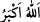

Ali (r.a.)’tan rivayet edildiğine göre o “Yüce himmet sahibi olmak îmandandır”
buyurmuştur.
Sâib der ki:
Lâ-mekânı seyretmek için kendimden geçiyorum.
Eğerin altında himmet gibi serkeş atımız var bizim.
“el-Aliyy” isminin özelliği, bayağı işlerden yüce işlere yükseltmektir. Bu isim yazılıp
çocuğun üzerine bağlanırsa bülûğa erer/büyür. Garip kimsenin üzerine bağlanırsa iki
yakası bir araya gelir. Fakirin üzerine bağlanırsa Allah Teâlâ’nın lütfu ile zenginliğe
erer.
“ büyüklüğünün yanında her şey hakir/küçük olandır. “ (Allah en
büyüktür)” sözünün mânâsı hakkında şöyle denilmiştir: Yâni O kendisine ‘en büyük’
denilmesinden ve başkasının O’nun büyüklüğünün künhünü idrâk etmesinden de daha
büyüktür. Büyüklerden birisi der ki: Namaz kılan kimsenin zâhir diliyle “
demesinin mânâsı, Hiçbir halin Rabbimi mukayyed kılmasından/kayıt altına almasından
Allah pek büyüktür/yücedir. Bilakis Allah Teâlâ tüm hallerde en büyüktür. O’nun
büyüklüğünü tanıyan kendi büyüklüğünü unutur.
Kullardan büyük olan âlim, takvâ sâhibi, halkı irşâd eden; örnek olmaya, nurlarından
ve ilimlerinden istifâde etmeye uygun olan kimsedir. Bu yüzden Îsâ (a.s.) şöyle
demiştir: “Kim bilir, amel eder ve bildiğini başkalarına öğretirse, işte o kimse semânın
melekûtunda “ulu/büyük” olarak çağrılır/adlandırılır.”
“el-Kebîr” isminin özelliği, bu ismi çok zikredene ilim ve ma’rifet kapısının
açılmasıdır. Bu isim bir yemeğe okunur ve eşler onu yerse aralarında uygunluk ve
anlaşma meydana gelir.
el-Erbeûne’l-İdrîsiyye’de der ki: “Ey büyük olan, sen azametini vasfetmek için
akılların yol bulamadığısın.”
Sühreverdî der ki: “Borcu çok olan kimse bu ismi çok zikrettiği zaman borcunu öder
ve rızkı genişler. Bulunduğu rütbeden azledilen kimse, yedi gün oruçlu olarak bu ismi
bin kere zikretse, kral bile olsa mertebe ve makamına geri döner.”
24. (Rasûlüm!) De ki: “Göklerden ve yerden size rızık veren kimdir?” De ki:
“Allah!” O halde biz veya siz, ikimizden biri, ya doğru yol üzerinde veya açık bir
sapıklık içindedir.
“(Rasûlüm!) De ki: “Göklerden” yağmur indirerek “ve yerden” bitki bitirerek “size